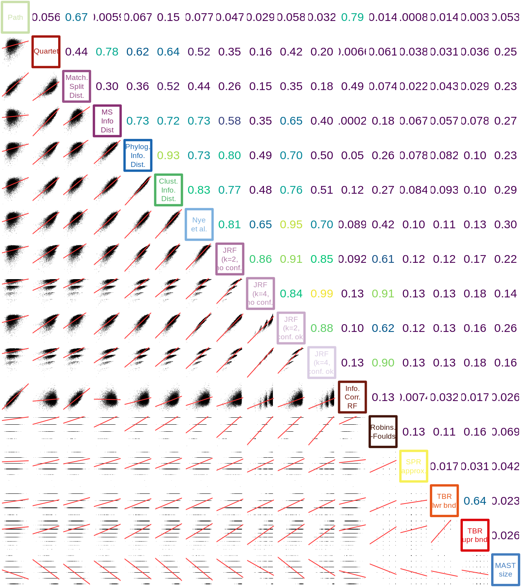
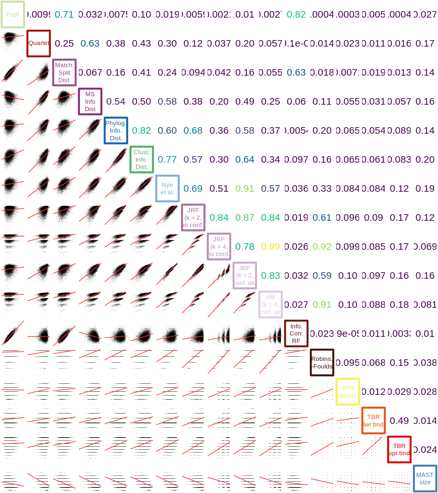

vignettes/11-correlation.Rmd
11-correlation.RmdThe information-based metrics are highly correlated with one another, and exhibit strong correlation with the Nye et al. and Quartet metrics. The Matching Splits and Path metrics are poorly correlated with all metrics except each other. The Robinson-Foulds metric shows minimal correlation with any other metric, notwithstanding a weak correlation with the Nye et al. measure.
Not plotted:
MASTI, which correlates perfectly with MAST;
NNI: both upper and lower bounds correlate almost perfectly with RF, due to the method of calculating the approximation.
Correlation (adjusted r²) between distances for 10 000 pairs of 25-leaf trees:

Correlation between distances for 10 000 pairs of 50-leaf trees:
